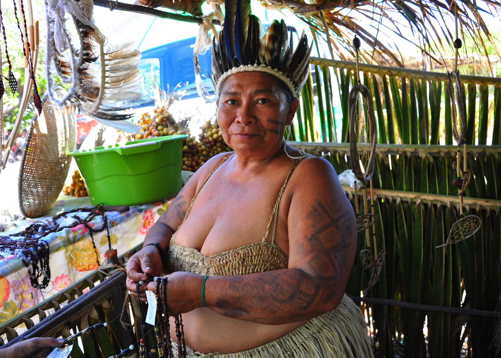

Pertencem ao tronco da família linguística tupi e estão concentrados nos estados da Paraíba, Ceará, Pernambuco e Rio Grande do Norte.
Povo Potiguara
Do tronco Tupi, o povo Potiguara se concentra numa área do litoral norte paraibano, sendo o maior povo indígena do Nordeste brasileiro, com cerca de 17 mil pessoas em três municípios (Baía da Traição, Marcação e Rio Tinto), de acordo com os dados levantados pela Sesai, em 2022.
Os Potiguara são considerados um dos povos que possuem em seus históricos a característica de serem guerreiros e muito resistentes. Sendo assim, dando continuidade ao fio condutor da vida na Mãe Terra, os Potiguara existem e resistem, pois, de acordo com um forte lema:
Em Tupi Potiguara:
Asé o’ar,
asé oikobé,
asé omanõ,
iandé anama te
oikobé kó ybýpe
auieramanhẽ ne
Em Potuguês:
A gente nasce,
a gente vive,
a gente morre,
mas nosso povo viverá nesta terra
para sempre.Língua
Os Potiguara fazem parte dos povos da família linguística Tupi. Hoje, falam o português e estão revitalizando o Tupi Potiguara, na Educação Escolar Indígena. Na última língua, Potiguara (Potĩguara) significa comedores de camarão (Silva, et.al. 2022). O processo de revitalização da língua possibilitou também em estudos e pesquisas sobre essa língua, sua composição sintática, seus diversos significados e, obviamente, a pronúncia. A exemplo dos estudos e atividades realizadas pelo professor, filólogo e lexicógrafo, Eduardo Navarro, em parceria com professores indígenas, especialmente da disciplina de Tupi.
Há um importante movimento nos Potiguara atualmente para recuperar elementos do Tupi a partir de informações do próprio povo, além do Tupi Geral que foi aprendido nos primeiros estudos de revitalização da língua, a cerca de 25 anos, como pode ser observado no livro Tupi Potiguara Kuapa.

História
A história do povo Potiguara é marcada por sua resistência e preservação cultural, apesar dos impactos da colonização, especialmente na Paraíba, onde enfrentaram conflitos, embates e mortes com os colonizadores. Apesar das dificuldades e da perda de aspectos culturais, como a língua Tupi, o povo Potiguara conseguiu manter vivos os legados de seus ancestrais. No entanto, os projetos indigenistas, como os esforços de "branqueamento" no Brasil, causaram mudanças irreversíveis na estrutura social e cultural dos Potiguara. Um episódio significativo na história recente foi o impacto da Companhia de Tecidos Rio Tinto, no século XX, que alterou o território potiguara. A instalação da fábrica resultou em desmatamentos e problemas ecológicos, além de contribuir para a urbanização e industrialização da região, afetando diretamente as famílias indígenas que viviam no antigo aldeamento de Monte-mor. O povo Potiguara também enfrentou desafios relacionados a questões fundiárias e discriminatórias, com disputas por terras e dificuldades nas demarcações e homologações. Ainda assim, o povo Potiguara continua habitando o mesmo território há mais de 500 anos, desde o contato com os colonizadores, sendo um exemplo de resistência e preservação de sua identidade e história.
Território
O território Potiguara é composto por três Terras Indígenas (TIs) contíguas, abrangendo 33.757 hectares, que incluem áreas urbanas como Vila Monte-Mór, Marcação e Baía da Traição. Há também um grande número de indígenas fora das TIs, vivendo em municípios vizinhos. Das 33 aldeias, uma não está regularizada (Taiepe). A TI Potiguara, homologada em 1991, abrange 25 aldeias, enquanto a TI Jacaré de São Domingos, homologada em 1993, cobre duas aldeias. A TI Potiguara de Monte-Mór, que aguarda homologação presidencial, abrange cinco aldeias.
O povo Potiguara tem um importante papel no diálogo com os governos municipal, estadual e federal, influenciando políticas públicas. O território é acessado por estradas asfaltadas e de terra, além de ser conectado ao mar e aos estuários dos rios Camaratuba e Mamanguape. Para mais detalhes sobre o território, recomenda-se a leitura do Etnomapeamento dos Potiguara.
Religião
Originalmente praticantes da religião tupi, os Potiguara hoje têm uma diversidade religiosa. Muitos são cristãos (católicos, evangélicos de várias denominações) ou seguem práticas espirituais ancestrais, como macumba, catimbó e jurema. O catolicismo, presente desde o período colonial, é a religião institucionalizada mais antiga, com igrejas e festas tradicionais. Nos últimos anos, missionários católicos e evangélicos têm modificado a religiosidade Potiguara. Apesar disso, algumas práticas espirituais tradicionais ainda persistem discretamente, com rezadores e rezadeiras que curam através de rituais ligados à natureza e aos antepassados. No entanto, nem todos aceitam essas práticas, devido à conversão religiosa e a influências externas.

Interação Social
A interação social dos Potiguara é marcada pela complexidade devido à grande extensão de seu território (mais de 30.000 hectares) e a presença de mais de 35.000 habitantes, incluindo índios e não índios, em áreas urbanas e 26 aldeias. A proximidade entre esses dois grupos dificulta a definição clara das fronteiras sociais e culturais. Apesar da atuação da Fundação Nacional do Índio (Funai), as políticas indigenistas contribuem para a complexificação das fronteiras étnicas, permitindo que os indivíduos transitem entre diferentes identidades. Além disso, o território potiguara está estrategicamente localizado entre João Pessoa e Natal, o que facilita o contato constante com o "mundo exterior", incluindo turistas e diversas organizações (governamentais e não governamentais), empresas e igrejas. Essa pluralidade de atores e fluxos torna as relações sociais dos Potiguara mais dinâmicas e difíceis de controlar.